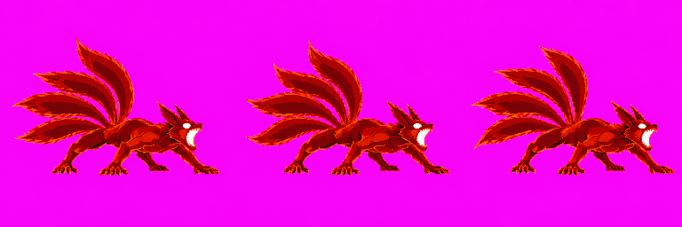
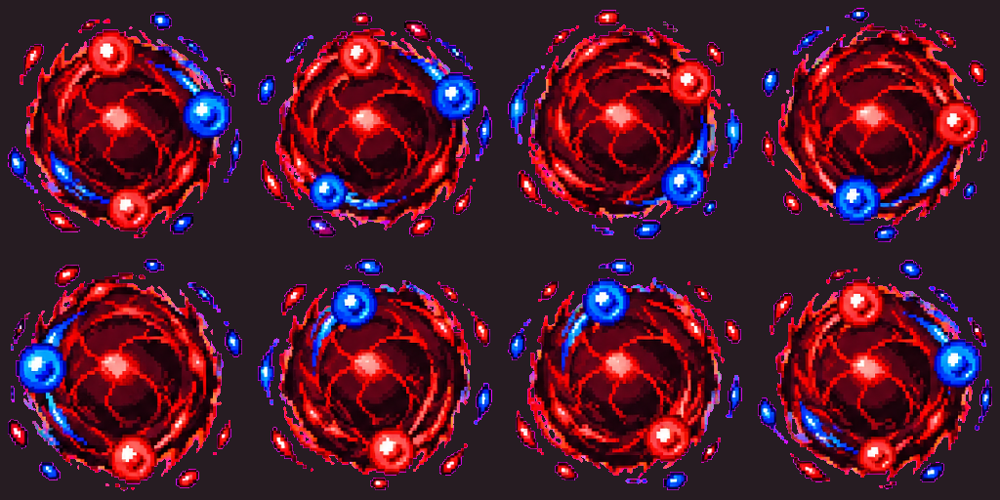
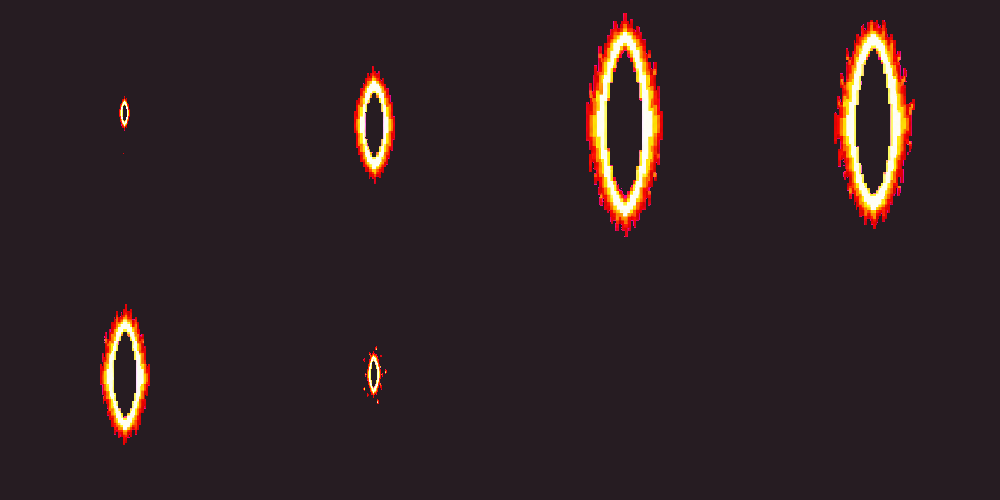
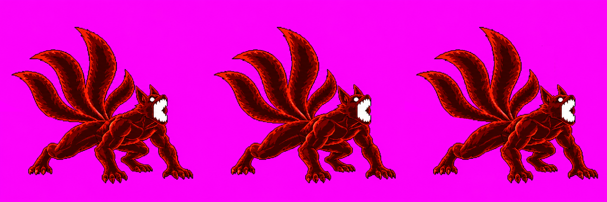
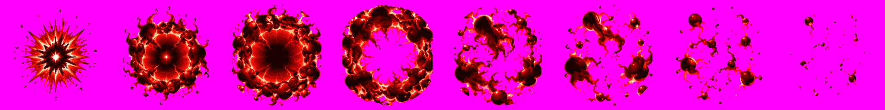
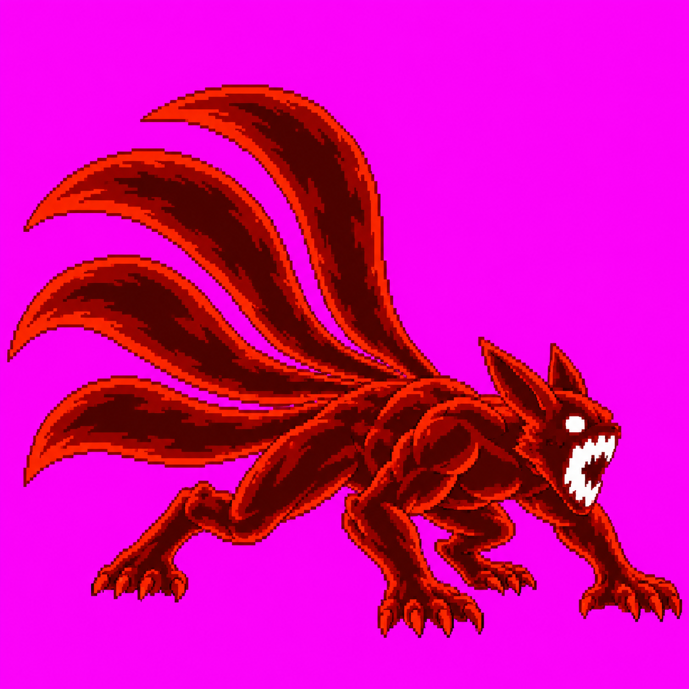

Unapproved candidate set. The user changed the ultimate to a Four-Tails fox firing from its mouth. beamFire v14's pounce approval is historical and superseded for this move. The effects are registered HD art candidates; Claude reports their local candidate pack and in-game placement work. This page does not claim scale clearance for the character strips.
Three looping frames: planted claws, open mouth, recoil tremble. Four distinct tails appear in each pose. The engine supplies the beam, chakra ball and beam-root ring. A versioned sidecar shifts all three frames +13px horizontally without resizing.

Eight frames of red and blue chakra orbs spiraling around a black-red core.

Six centered frames; ring height sequence 60, 120, 230, 215, 145, 60px. Claude reports local candidate packing and in-game placement work; final user art approval is pending.

beamCharge v17 is the latest seam-repaired gathering strip (v12 is retained in version history); its prior technical hold remains. fourTailsRoar v02 is the round burst. ui_ult_fg v04 stays user-approved.



Older beamCharge v12 and prior roar candidate versions remain preserved. The Astra v08 audit of the earlier charge repair does not certify v17's complete packed anatomy, scale or contact.
Sources and call accounting are recorded in the repository review queue and the versioned provenance record. Review is visual only; Claude owns remaining character scale/contact checks and adds the packed mouth anchors during integration.